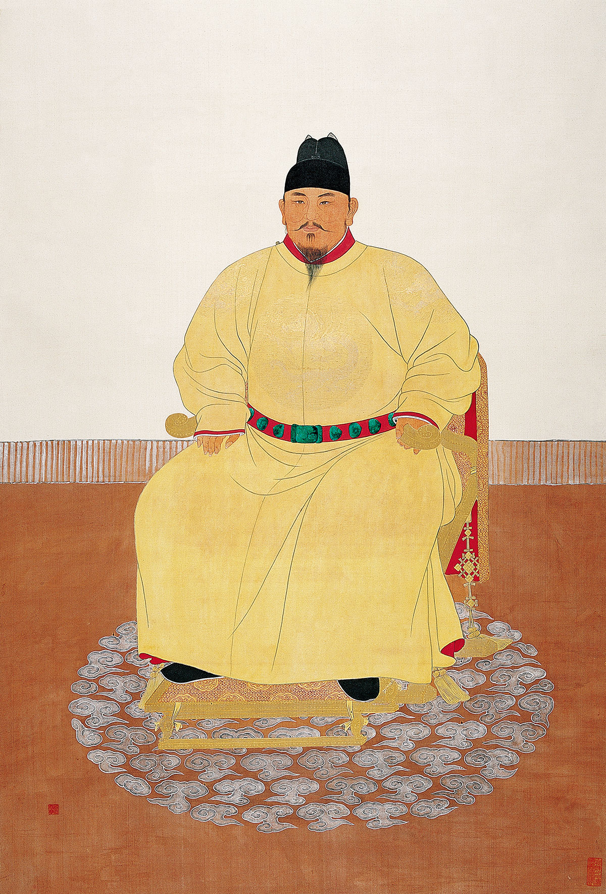
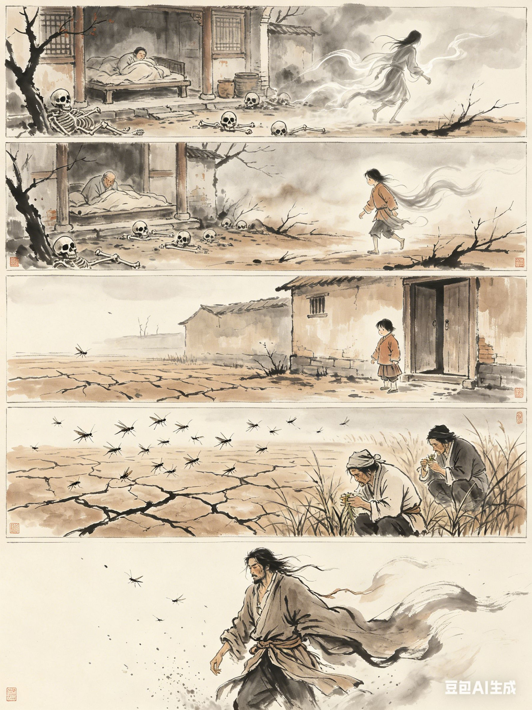
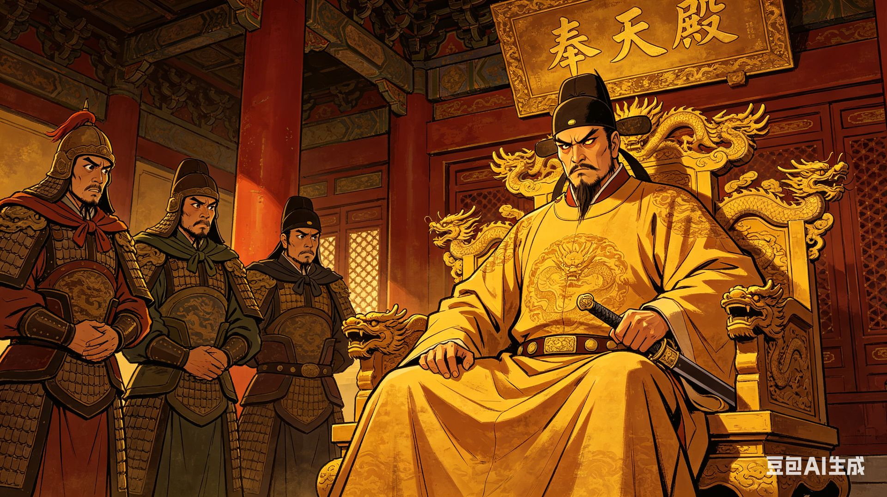
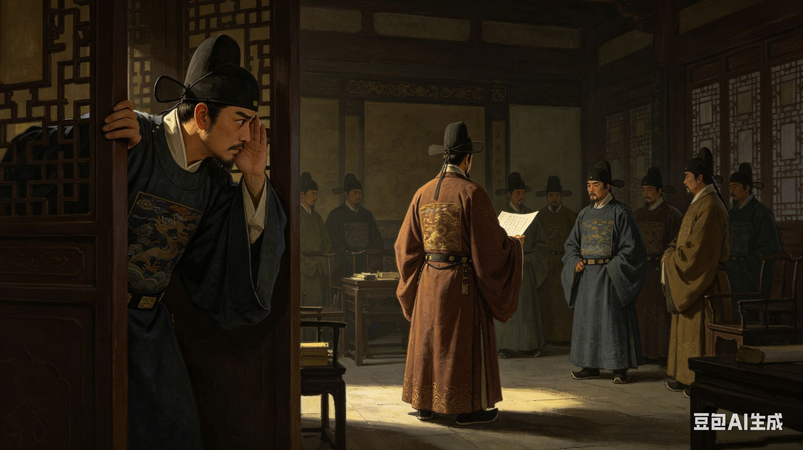
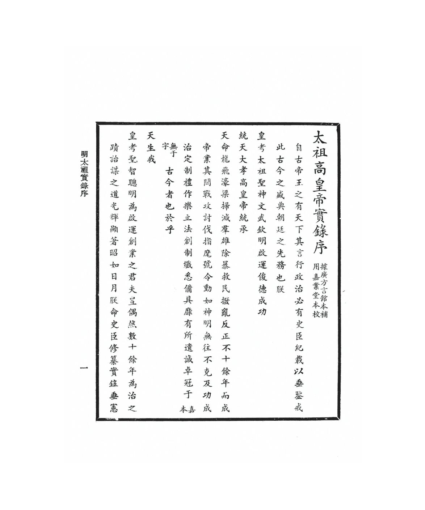

跨学科历史研究
梁建炜 · 李松恩 · 任东鹏 · 陶鹏骏 · 周士钦 · 张誉超 · 赵一舟
RESEARCH TOPIC
探析朱元璋青少年苦难创伤、底层漂泊经历塑造的猜忌、自卑与不安全感。
对中晚年肃贪、废相、屠戮功臣等政治决策的关联，丰富帝王人格与治国行为的研究。
HISTORICAL FIGURE

濠州钟离（今安徽凤阳）人，明朝开国皇帝，年号洪武。出身赤贫，少时放牛，17岁逢灾疫失亲，入皇觉寺为僧，后流浪淮西乞讨三年。1352年投红巾军郭子兴部，渐掌兵权，1356年取南京为根据地。1368年称帝建明，北伐灭元，统一全国。
PSYCHOLOGICAL THEORIES
自卑感与补偿机制：深刻的自卑感催生对"控制"的异常渴望，作为心理补偿，将一切置于绝对掌控之下。
持续性创伤形成牢固的负性核心信念："他人不可信"、"世界充满威胁"，导致过度警觉与控制欲。
青少年期核心危机——同一性与角色混乱：剧烈的身份撕裂使他终其一生建构并捍卫强大的"帝王同一性"。
个体通过获取和行使公共权力，来补偿私密领域的自卑、焦虑或无力感。焦虑核心是"失控"与"被背叛"。
HISTORICAL SOURCES
明朝官方编年体史书，记录朱元璋生平与治国言行
清代官修纪传体史书，系统记载明朝历史
记录明朝开国初期的重要事件与制度
朱元璋亲自撰写的皇室训诫，折射其深层心理
CASE ANALYSIS

据《明太祖本纪》及朱元璋自撰《御制皇陵碑》："天灾流行，眷属罹殃。……身如蓬逐风而不止，心滚滚乎沸汤。"
"设丞相，自秦始。朕观自古以来，君天下者，无贤否治乱，莫不由于宰相之贤否。然宰相权重，指鹿为马，非自今始。"
这段经历摧毁了他对世界的基本安全感与信任感。根据阿德勒的个体心理学，这种深刻的自卑感，催生了对"控制"的异常渴望，作为心理补偿。他潜意识中认为，只有将一切置于自己的绝对掌控之下，才能避免重蹈无力、无助、任人摆布的覆辙。
"以后子孙做皇帝时，并不许立丞相。臣下敢有奏请设立者，文武群臣即时劾奏，将犯人凌迟，全家处死。"

个体通过获取和行使公共权力，来补偿私密领域的自卑、焦虑或无力感。朱元璋的焦虑核心是"失控"与"被背叛"，因此他需要建立一种绝对控制、绝对忠诚的制度补偿。
"朕设察言司，将以察四方之奸弊也。今所言者，皆朕之肘腋。朕左右尚有欺隐者，况远方乎？"
《明史·职官志五》载："（洪武）十五年罢仪鸾司，改置锦衣卫，掌直驾侍卫、巡查缉捕。"不仅仅是安保，更是主动出击的监控。锦衣卫的调查起点可以是捕风捉影，这正是朱元璋需要满足其"过度警觉"心理的制度设计。

持续性的创伤经历会形成牢固的负性核心信念，如"我是危险的"、"他人不可信"、"世界是充满威胁的"。太子朱标的去世激活了他内心最深层的创伤性认知——"权力一旦分散，必将导致背叛与毁灭"。
"玉不乐居宋、颍两公下，奏曰：'臣劳征伐，乃不得国公乎？'"封其为凉国公后，"玉犹不乐，居常怏怏，尝出不逊语。"
朱元璋和锦衣卫系统性地搜寻符合其预设结论（蓝玉必反）的证据，忽略或否定相反信息。《逆臣录》记载的供词高度一致地指向"谋反"——这恰恰暴露了有罪推定的审讯逻辑。

当个体无法在内心获得安全感时，可能通过在外部世界建立绝对、有序的恐怖秩序来代偿。朱元璋的重典，尤其是后期的大案株连，已超出打击具体犯罪的范畴。
"朕自起兵至今，四十余年，亲见天下奸顽之徒，虽多被诛戮，终不知悔。"
早期《大诰》侧重惩治贪官污吏。但到后期，如蓝玉案、郭桓案，动辄株连数万人，其打击范围已扩大到整个功臣集团。《明史·刑法志二》载："郭桓既诛，天下中人以上之家，大抵皆破。"这种大规模、无差别的清洗，其心理功能是制造真空。
ERIKSON'S THEORY
埃里克森认为，青少年期的核心危机是"同一性与角色混乱"，即个体需要整合过去的经验与社会角色，形成稳定、统一的自我认知。朱元璋的青少年时期，恰恰经历了常人难以想象的剧烈身份撕裂。
他的青少年始于一场"角色"的彻底剥夺。家庭的死亡与离散，让他从"农家子"瞬间沦为无依的流民。随后进入皇觉寺为僧，又被迫离开寺庙，成为云游乞丐的游方僧。
通过战场上的生死搏杀和权力场中的冷酷算计，他迅速凭借武力与权谋崛起，用军事胜利和扩张的权力，暂时压倒了内心的角色混乱。
这种通过外部成就"焊接"起来的同一性根基脆弱。早年无家可归的飘零感、为奴为仆的羞耻感、朝不保夕的不安全感，如同幽灵般潜伏在他强悍的帝王人格之下。
他后来所有的重典、监视与清洗，都可以看作对这段时期的补偿：他必须确保帝国秩序绝对稳固，任何人、任何制度都不能再让他体验那种失控与无助。
朱元璋青少年经历对其中晚年决策的心理学解读
老朱也是个苦命人诶